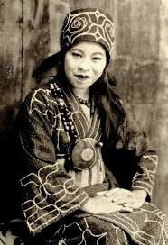

Anne Bonny and Mary Read became two of the most famed pirates. James Bonny, a nothing too special pirate and sailor, married Anne in 1718. Anne quickly grew to dislike her husband and caught the eye of Pirate Calico Jack Rackham. Calico offered to buy Anne from her husband, but with a rejected offer they snuck out at night and began a life of piracy. Anne fought in men’s clothing and was often considered just as dangerous as any male pirate. She didn’t have to conceal her gender with shipmates, but disguised herself when pillaging or in armed conflicts. She was fearless and an expert with a pistol, and often fought alongside another famed female pirate of the time, Mary Read.
(1775-1844)
Pirate Princess of the China Sea

The origins of the pirate Ching Shih are somewhat unclear, as even her name Ching Shih only means “widow of Cheng”. Before her husband died, he commanded the Red Flag pirate fleet, which Ching Shih would later take up. He died unexpectedly, and she took control of the family business which included the entire fleet of over 1,800 ships and an estimated 80,000 men. This made her more successful than most of the famous pirates of the time like Blackbeard who had a mere 4 ships and 300 men. She unified the fleet using a code of laws, which was often strict. She made sure that women were never mistreated, and some of her laws created punishments for rape and ensured that men would respect their wives in marriage or again be punished. Under her leadership, the Red Flags became unstoppable. Qing dynasty officials, the East India Company, and the Portuguese navy all attempted to vanquish the fleet, but it remained undefeated. After making enough money to settle down, she was pardoned by the Chinese Government and could retire unpunished and with a notorious reputation.
(1412-1431)
The Teen who saved France
At age 18, Jehanne d’Arc (“Joan of Arc”) led the French army to victory over the English at Orleans, and helped end the Hundred Years War. At 12 years old, she claimed to start having visions and communication with saints and angels, which told her to save her country from the invading English and she left home at 16. She traveled 375 miles in the winter of 1429 to reach the king at the time. King Charles VII didn’t know how to react when 17 year-old Joan approached him and said that she could save France. She eventually won him over, and he gave her army and a horse and told her to lead a handful of men to the battle at Orleans. She was responsible for directing troops, outlining strategies, and negotiating diplomacy with the British. After being captured, Joan was tried on 70 counts which included claiming to be in contact with god, witchcraft, and dressing like a man.
(1840-1889)
“The Apache Joan of Arc”
Lozen, a Chihenne Chiricahua Apache warrior and medicine woman and military strategist, had a gift for riding and shooting and was interested in fighting and medicine even when she was younger. She had no interest in the domestic affairs and roles of the Apache women, and wanted to learn the ways of the warrior. She was an ally to the famous Geronimo, and had a sense of how to plan attacks and anticipate where the enemy would be or direction of attack. She often prayed to the highest Apache deity of creation for guidance, which is one of the reasons why she is compared to Joan of Arc. Lozen fought with her brother Victorio, a tribe leader, to protect their people from the U.S. government trying to steal their territory. Her brother writes that she was his “right hand, strong as a man, braver than most, and cunning in strategy. Lozen is a shield to her people.” In 1870, the Apache were driven out of their lands and onto reservations. Yet, Lozen and other members of her tribe kept fighting.
(1847-1868)
Samurai leader and teacher
Nakano Takeko both taught and belonged to a female samurai class of Japan, called the Onna-Bugeisha. Her mentor, Akaoka Daisuke, taught her martial arts, literature, mathematics, and more that were not common to women at that time. 1868 brought a civil war between the ruling Shogunate and the western-supported Meiji Imperial Government who wanted to regain control of Japan. This war broke out and was known as the Boshin War. Even after the shogun surrendered, fighting continued. Since she couldn’t officially join the army as a woman, Nakano led a troop of all women samurai fighters against the Imperial Army, to later be called the Onna-Bugeisha. The women fought primarily with the naginata, a Japanese pole-arm that allows the bearer to even the odds when fighting against bigger opponents.
(1912-2011)
Gestapo’s most wanted
Nancy Wake, nicknamed the white mouse for inability to be captured or trapped, was the epitome of glamour, bravery, and all-around badassery at wartime. As a leader of the resistance, she helped hundreds of allied soldiers escape from Nazi-occupied France to Spain. She began as a freelance journalist, who on a visit to Vienna witnessed Nazi groups randomly beating Jewish men and women in the streets, and even though she didn’t like killing people, she vowed that she would do everything she could to stop the Nazis. Trained to kill with her bare hands, Wake killed a German guard with her a karate chop to the neck, biked 70 hours through dangerous Nazi checkpoints to deliver radio codes for the Allies, and helped establish key lines of communication between the Allies. One of her French colleagues writes, "She is the most feminine woman I know until the fighting starts. Then she is like five men".